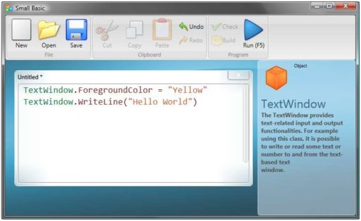
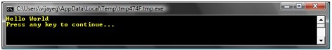

A program is a set of instructions for the computer. These instructions tell the computer precisely what to do, and the computer always follows these instructions. Just like people, computers can only follow instructions if specified in a language they can understand. These are called programming languages. There are very many languages that the computer can understand and Small Basic is one.
Imagine a conversation happening between you and your friend. You and your friends would use words, organized as sentences to convey information back and forth. Similarly, programming languages contain collections of words that can be organized into sentences that convey information to the computer. And programs are basically sets of sentences (sometimes just a few and sometimes many thousands) that together make sense to both the programmer and the computer alike. There are many languages that the computer can understand. Java, C++, Python, VB, etc. are all powerful modern computer languages that are used to develop simple to complex software programs.
A typical Small Basic program consists of a bunch programs statements . Every line of the program represents a statement and every statement is an instruction for the computer. When we ask the computer to execute a Small Basic program, it takes the program and reads the first statement. It understands what we’re trying to say and then executes our instruction. Once it’s done executing our first statement, it comes back to the program and reads and executes the second line. It continues to do so until it reaches the end of the program. That is when our program finishes.
TextWindow.WriteLine("Hello World")This is a very simple program that consists of one statement That statement tells the computer to write a line of text which is Hello World, into the Text Window. It literally translates in the computer’s mind to: Write Hello World. You might have already noticed that the statement can in turn be split into smaller segments much like sentences can be split into words. In the first statement we have 3 distinct segments: a) TextWindow b) WriteLine c) “Hello World” The dot, parentheses and the quotes are all punctuations that have to be placed at appropriate positions in the statement, for the computer to understand our intent. You might remember the black window that appeared when we ran our first program. That black window is called the TextWindow or sometimes referred to as the Console. That is where the result of this program goes.
The TextWindowis called an object. There are a number of such objects available for us to use in our programs. We can perform several different operations on these objects. We’ve already used the WriteLine< operation in our program. You might also have noticed that the WriteLine operation is followed by Hello inside quotes. This text is passed as input
Punctuations such as quotes, spaces and parenthesis are very important in a computer out to the user. This is called an input to the program. Based on their position and count, operation. Some operations take one or more they can change the meaning of what is being inputs while others don’t take any͘ expressed.
Now that you have understood our first program, let’s go ahead and make it fancier by adding some colors.
TextWindow.ForegroundColor = "Yellow"TextWindow.WriteLine("Hello World")

When you run the above program, you’ll notice that it prints out the same “Hello World” phrase inside TextWindow, but this time it prints it out in yellow instead of the gray that it did earlier.

Notice the new statement we added to our original program. It uses a new word, ForegroundColor which we equated to a value of “Yellow.” This means we’ve assigned “Yellow” to ForegroundColor. Now, the difference between ForegroundColor and the operation WriteLine is that ForegroundColor did not take any inputs nor did it need any parenthesis. Instead it was followed by an of TextWindow. Here is a list of values that are valid for the ForegroundColor property. Try replacing “Yellow” with one of these and see the results - don’t forget the quotes, they are required punctuations.